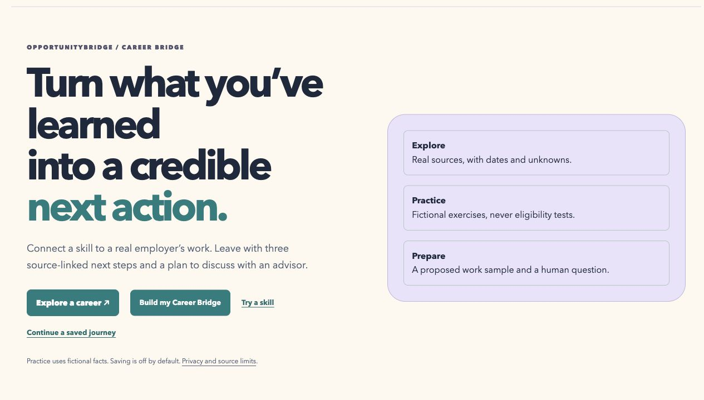

Turn a learned skill into three credible next actions.
Three minutes · seven genuine working-app screenshots · English captions and transcript. This is a screenshot sequence, not continuous footage, a participant recording or a testimonial. Playback starts only by choice.
0:00 / 3:00

A skill is only the start
A fictional learner knows introductory HTML but cannot yet explain its relevance to a real employer. Career Bridge turns that starting point into a portable preparation plan.
Genuine working-app screenshots. Fictional learner; no measured human outcomes.
Complete English transcript and source links · Actual browser-downloaded Markdown plan · Actual downloaded JSON · Try the working example
The sample retains its actual local capture timestamp and revision. Generate a new plan in the deployed app for the current source revision. Source reviews may be stale. Enrollment,authorization,availability and employer decisions remain unknown. No application or message is sent.
Proposed five-person feasibility stage · Five-minute verification route
Retained prior videos and research limits
v0.8.1 MP4 · v0.8 MP4 · v0.7 MP4 · v0.4 MP4. Historical captures retain their original claims/dates; new source approval is not implied. One reported informal reviewer; zero verified formal timed human sessions; zero independent gold adjudicators. No hiring,equity or career outcome has been measured.